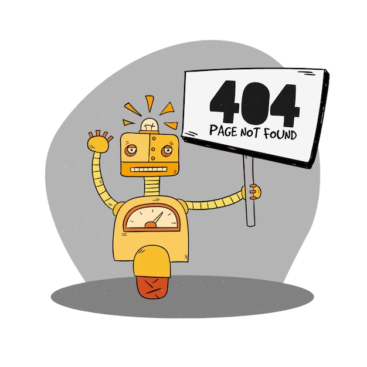

"Ой, что-то пошло не так, Страница, кажется, потерялась в катакомбах. Искали, искали, но никак не нашли, 404 - это путь, которого не существует или он был удалён. Но не отчаивайтесь, мы работаем над этим. Пока что, погрузитесь в другие разделы сайта, Возможно, там вы найдете, что давно искали. Мы извиняемся за неудобства, И обещаем, что скоро все исправим."
На главную 